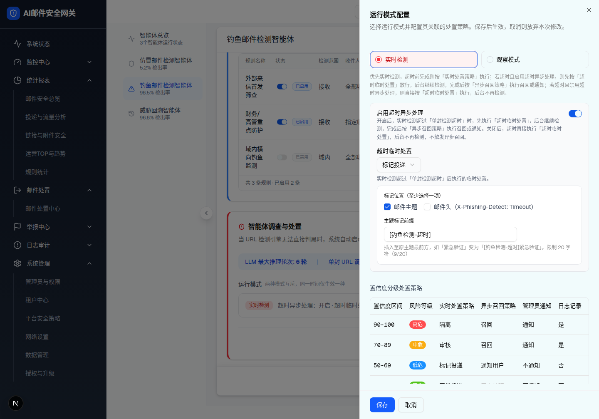

3 运行模式抽屉：模式单选（实时/观察）+ 模式关联配置 + 置信度分级策略表
触发路径：摘要卡「编辑」→ 抽屉打开并拍快照。切「观察模式」隐藏超时配置、显示观察动作、分级表整表置灰；切「实时检测」显示超时异步开关（关闭触发二次确认 layer-6）与超时临时处置。分级表点「修改」→ 区间编辑弹窗（layer-4）。底部「保存」需分级区间连续覆盖 0-100。


UI 元素清单
| # | 元素 | 字段 | 行为/校验 |
|---|---|---|---|
| 1 | 模式单选 | observeEnabled / detectionMode | 实时检测 / 观察模式，互斥；切换条件渲染下方配置 |
| 2 | 启用超时异步处理 | enableTimeoutAsync | 默认开；关闭触发二次确认弹窗（layer-6） |
| 3 | 超时临时处置 Select | timeoutTempDisposal | 正常投递/标记投递/按沙箱透视结果处置 |
| 4 | 标记位置 Checkbox | timeoutMarkPositions | 主题/邮件头，至少一项（取消全部回退主题+提示） |
| 5 | 主题标记前缀 | timeoutSubjectPrefix | 默认「[钓鱼检测-超时]」，≤20 字符截断提示 |
| 6 | 观察动作 RadioGroup | observeAction | 正常投递/标记投递（观察模式时显示） |
| 7 | 分级策略表 | bands | 4 档；实时处置列(异步模式置灰)、异步召回列(实时+超时异步关时置灰)；观察模式整表置灰 |
| 8 | 行「修改」 | — | → 区间编辑弹窗（layer-4），改动纳入抽屉草稿 |
| 9 | 保存 / 取消 | — | 保存需 bandsValid（连续覆盖 0-100）；取消 cancelModeDrawer 还原快照 |
DOM 树比对结果
| 比对项 | demo 实际 DOM | 提取的 HTML | 是否一致 |
|---|---|---|---|
| 抽屉根 | div.bg-background（sm:max-w-xl）childCount=4 nodeCount=109 | 真实提取 DOM（实时/观察两态全量内嵌，可切换） | ✅ |
| 模式单选 | 2 选项：实时检测(红,选中) / 观察模式 | 一致，实时默认选中 | ✅ |
| 超时临时处置 | Select 默认「标记投递」+ 标记位置/主题前缀「[钓鱼检测-超时]」 | 一致 | ✅ |
| 分级表行数 | 4（90-100/70-89/50-69/0-49） | 4 | ✅ |
| 安全档异步列 | "无需处理" 灰 #BFBFBF | 一致 | ✅ |
| 底部按钮 | 保存(蓝) + 取消 | 一致 | ✅ |